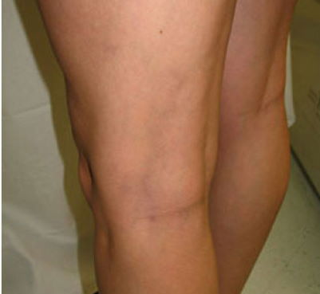
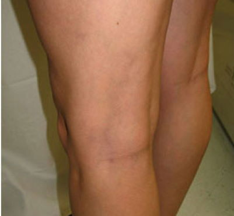

Cómo eliminar para siempre las varices: un remedio del que no se habla en la tele me ayudó


Todo comenzó con una araña vascular inofensiva, que se manifestó en el primer trimestre del embarazo. Mi barriga aumentó y con ella mi peso. Por cierto, durante todo el tiempo gané mucho unos 20 kilos. Fue difícil moverse. Me dolían e hinchaban las piernas, y más cerca del parto, estaban cubiertas con una malla de venas de color marrón azulado, al menos jugar al tic-tac-toe.


El médico en quien confiaba dijo que eran venas varicosas, y una de cada dos mujeres embarazadas la padece. Esta es nuestra fisiología femenina. Solo los ungüentos que me recomendó casi no ayudaron. El efecto fue débil. Con medias de compresión, el dolor disminuyó, pero no por mucho tiempo. Las venas también estaban hinchadas.
Al nacer mi Diego, tuve que dejar de lado mis enfermedades. Mi hijo estaba muy inquieto, mi marido estaba en el trabajo y yo hasta reventar. El bebé no me daba tregua en absoluto, siempre estaba en mis brazos. Después creció, empezó a gatear y se hizo aún más difícil. Antes de que te des cuenta, ya está probando la arena de la caja de arena para gatos o probando los zapatos de su papito. Solía pasarme el día de un lado a otro y por la noche casi no podía moverme.
No podía dormir por la noche, doblada por el dolor, como si me cauterizaran las piernas con un hierro candente. Y si no íbamos a dar un paseo por el parque, no podía conciliar el sueño a causa del sentimiento de culpa. Qué clase de madre es esta... incompleta.
Por aquel entonces no tenía ni una sola falda en mi armario, aunque mi figura me permitía incluso llevar una minifalda (recuperé la forma rápidamente, gracias a la genética y a mi hijo activo). Me sentía terriblemente avergonzado de mis piernas, que estaban cubiertas de nudos y protuberancias azules, y las escondía bajo los pantalones.

Como me sospechaba, la clínica no me dio ninguna buena noticia. Deje de cuidar a mí misma... Mis venas estaban en mal estado. El médico me recomendó que fuera a un hospital para que me extirparan los nódulos varicosos. Y después de la operación, tienes que esperar un milagro. Porque no hay garantías. Una recaída puede ocurrir en cualquier momento.
Con esa perspectiva el mundo se me vino abajo. Arriesgas tu salud, te sometes al bisturí del cirujano y no hay garantías.
Mi esposo y yo tuvimos una larga conversación sobre el tema. Al final decidimos posponer la operación y tratar de encontrar una cura. Pedimos información a los conocidos. Un colega de mi marido me dijo que su madre había sido curada por una curandera hereditaria. Le explicó a grandes rasgos dónde encontrarla.
Realizamos un largo viaje (600 km de ida), pero no pudimos encontrarnos con la curandera: la anciana ya había muerto. Como no tenía hijos, compartió sus conocimientos con una vecina. Nos dijo que el castaño de Indias, el ajenjo y la manzanilla curarían mis venas.
De regreso a casa, busqué en Internet remedios que contuvieran estas plantas. Y resultó que tanto estos como otros agentes contra las varices están contenidos en la crema . La pide. ¡Y por una buena razón! ¡La anciana no se había equivocado!
Tras solo dos días de uso de sentí que algo me hacía cosquillas en las espinillas. Es difícil de describir con palabras, como si las hormigas corrieran de un lado a otro. Y al mismo tiempo la hinchazón ha desaparecido.
Al cabo de una semana, dejaron de dolerme las piernas, incluso si presiono el bulto de las varices. Desapareció el peso en las piernas y fue mucho más fácil caminar. Era como si flotara en el aire.


Los largos paseos por el parque, que tanto le gustan a mi hijo, fueron una alegría para los dos. ¡Podríamos correr hasta que anocheciera!
 
No puedo decir que haya sido rápido, pero me ayudó y recuperé la forma de mis piernas. Los grumos se han disuelto. Mis venas se han aclarado. Las arañas vasculares han desaparecido y puedo volver a llevar minifaldas y vestidos. Me llevó dos meses y tres tubos de .
P.D.: En el momento de escribir este post, ¡han pasado unos 8 meses y ni una pizca de várices! Espero que siga así.
Estoy contenta de no haber aceptado la operación. Y tú tampoco lo hagas. ¿Por qué correr esos riesgos cuando hay un remedio tan bueno?
Que mi caso te sirva de ejemplo: no hay que descuidar la salud. Sé lo insoportable que puede ser la enfermedad, así que quería compartir mi historia.

Los especialistas explican qué hacer con síntomas como: fatiga rápida de las piernas, sensación de pesadez en las piernas, hinchazón y arañas vasculares pronunciadas.

El desarrollo revolucionario de los científicos contra las várices anuncia un gran avance en la flebología y una victoria sin concesiones sobre la enfermedad. Lee el artículo.

Las venas varicosas son potencialmente mortales: cada año, los coágulos de sangre relacionados con las venas varicosas quitan la vida al 1% de la población.

14 Comentarios
Buenas tardes Margarita , leí tu historia y es reconfortante. El final me hizo llorar, me alegro mucho por ti, ¡que Dios te bendiga! Voy a recomendar esta crema a cualquier persona que tenga este problema.
Tengo 27 años y ya estoy en la segunda fase de las venas varicosas. Los flebólogos sólo aconsejan la cirugía: no pueden curarla de otra manera. Me gustaría probar esto, tal vez me ayude.
¡Compra la crema y no te arrepentirás! Y compra 2 frascos a la vez si ya tienes varices avanzadas. No puedo decir que fuera inmediato, pero las varices desaparecieron. Al principio, la pesadez de mis piernas desapareció. Incluso he vuelto a usar tacones de 8‑10 cm. Mis piernas dejaron de hincharse. Al cabo de un mes, la red venosa azul desapareció. Y los nudos y bultos de mis piernas desaparecieron en unos 3 meses. Pero eran enormes. Ahora recomiendo esta crema a todo el mundo.
Sé lo que quieres decir. Soy una anfitrión de eventos. Antes me sentía incómoda con cada movimiento. Tomé pastillas e hice compresas de col. Nada me ayudo. Entonces me enteré de . Al principio no me ayudo. Entonces me di cuenta de que en mi etapa probablemente debería aplicarla 2 veces al día y ¡tenía razón! ¡Me animé de verdad! Mi tratamiento duró un poco más, supongo que todo depende de lo avanzada que esté, pero qué resultado:
Sufro de varices graves. Hace tres años tuve endurecimiento en una pierna. Ahora, tras el embarazo y el parto, la vena de la otra pierna es claramente visible. Entiendo que la cirugía no es la solución, pero nada de lo que me recomendó el doctor me ha ayudado.
Tengo el mismo problema. Mis piernas se hincharon terriblemente durante el embarazo. Las venas se salían. La culpa fue mía: engordé 27 kilos. Compré todo tipo de ungüentos y nada me ayudó.
No sirve de nada porque no sabes lo que contienen estos ungüentos. Hay corrupción en todas partes, ¡y más aún en nuestra región! Las empresas farmacéuticas pagan para vender sus productos. Pero todos los productos contienen sustancias químicas y nada útil. El que más dinero ofrece vende sus productos más rápido. Sé de lo que hablo. Mi madre murió por culpa de unos medicamentos malos y hubiera sido posible salvarla...
¿Qué estás diciendo? ¿Estás culpando a la farmacia de la muerte de tu adre? Perdona, pero quizá deberías haberla llevado a una buena clínica. ¡Y esta crema realmente es guau! Vi los efectos en mi hermana. Sus piernas parecen ahora las de una niña. Mi hermana tiene ahora 48 años.
Ya recibí el paquete. Estoy leyendo el contenido: todo es natural. Lo voy a utilizar más adelante informaré de los resultados. Espero ver mejorías.
A mi tía la operaron y le cortaron los nudos y coágulos de sangre. Parecía estar bien, pero después volvieron a salir las venas. Después de dos años más o menos.
No sé, ¿quizás el doctor era incompetente? Mi hermana no ha visto una sola vena durante siete años después de la operación. Si se hubieran enterado antes de la existencia de esta crema, quizá no habrían tenido que operarse.
También he oído hablar de esta crema. ¡Dicen que tiene un gran efecto!
Me aplico la crema hace tres meses. Aunque parezca mentira, ya eliminó poco a poco los hematomas, las venas abultadas, los nudos inflamados y los bultos. Aquí tienes las fotos antes y después como prueba:
¡Gracias chicas por los comentarios! Voy a pedir esta crema ahora mismo. Ya no soporto mis horribles venas de las piernas :( Tengo miedo de operarme. Y si algo va mal... Y tengo una familia.
Ordena con un descuento de -50%
Pedir